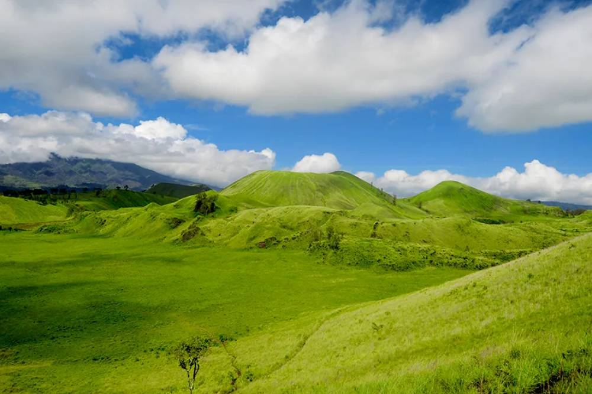
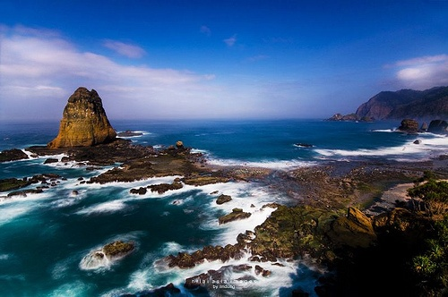
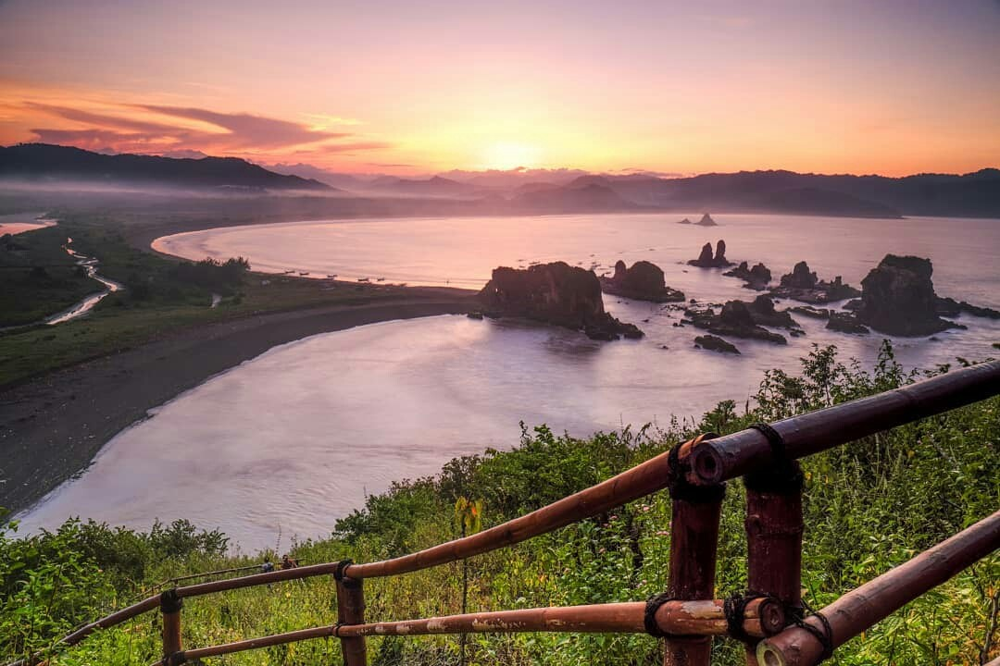
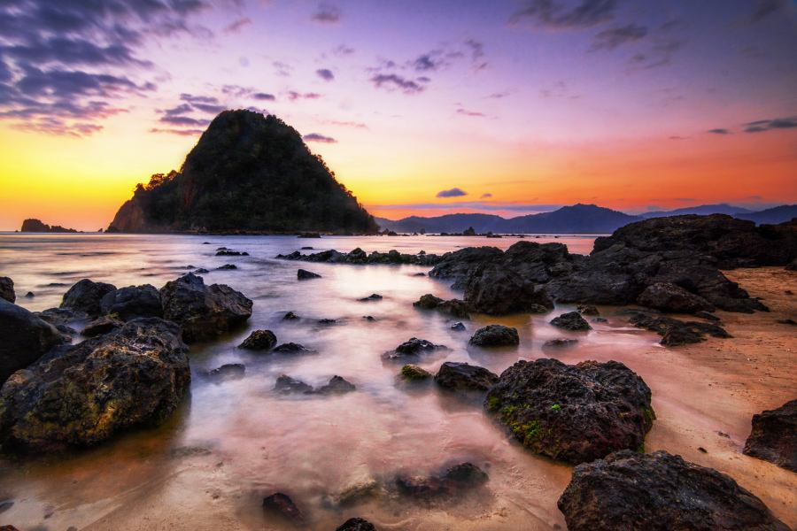
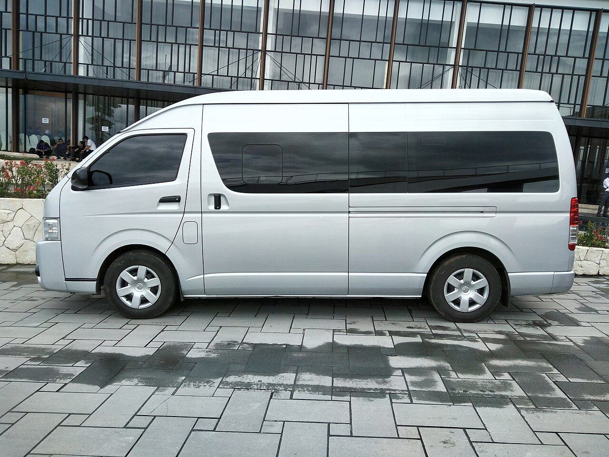

Bromo
Sunrise Bromo
Rute favorit untuk perjalanan malam dari Jember.
Dokumentasi
Lihat inspirasi destinasi dan armada untuk perjalanan wisata dari Jember.
Pilihan Visual
Kumpulan foto untuk membantu calon pelanggan membayangkan rute wisata dan kebutuhan kendaraan sebelum konsultasi via WhatsApp.
Rute favorit untuk perjalanan malam dari Jember.

Danau kawah dan trek dini hari.

Savana dan perbukitan terbuka.

Pantai selatan dengan batu karang ikonik.

View sunset dari kawasan Payangan.

Pantai sunset untuk rute Banyuwangi.

Hutan trembesi untuk itinerary santai.

Air terjun ikonik Jawa Timur.

Savana dan pantai untuk family trip.

Pilihan mobil pribadi, Hiace, dan Elf.
Kategori